Visual science communication • sketches & illustrations
A small collection of science communication work I made during my undergraduate studies: visual explanations of biological concepts that I found beautiful and worth retelling in a different way. Drawing biology helps me think through it. These are not part of my formal research, but they reflect how I engage with the microbial diversity community and how I try to make science more accessible.
A nine-panel sequence walking through the evolution of photosynthesis, from anoxygenic ancestors to the oxygen-producing cyanobacteria that transformed Earth’s atmosphere. One of my greatest obsessions is how light is food: how microbes turn simple wavelengths into life. Since undergrad, this obsession has evolved quickly (like microbes). I’m now fascinated by how the electron donors available to a cell, even crummy ones, have shaped all life on Earth.
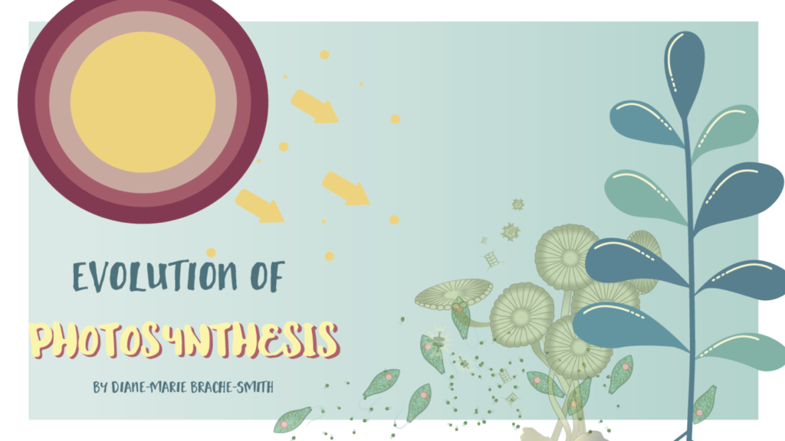
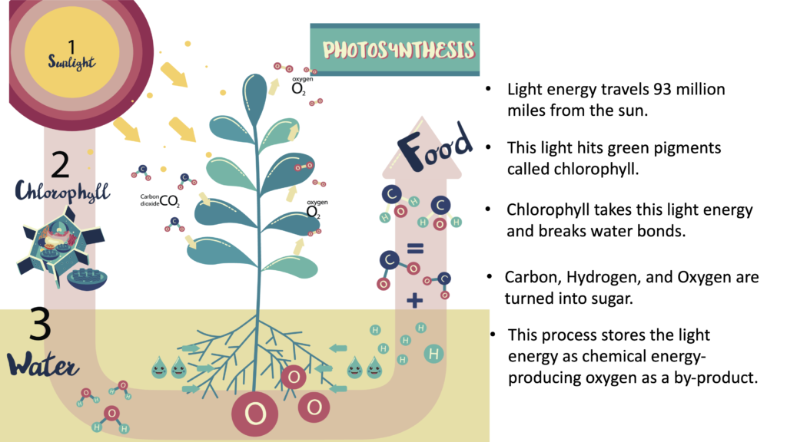
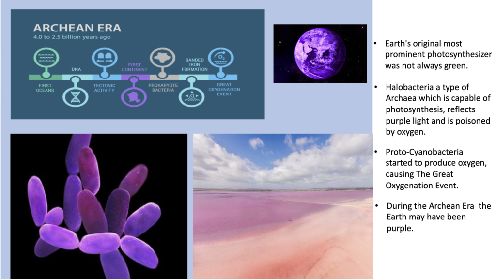
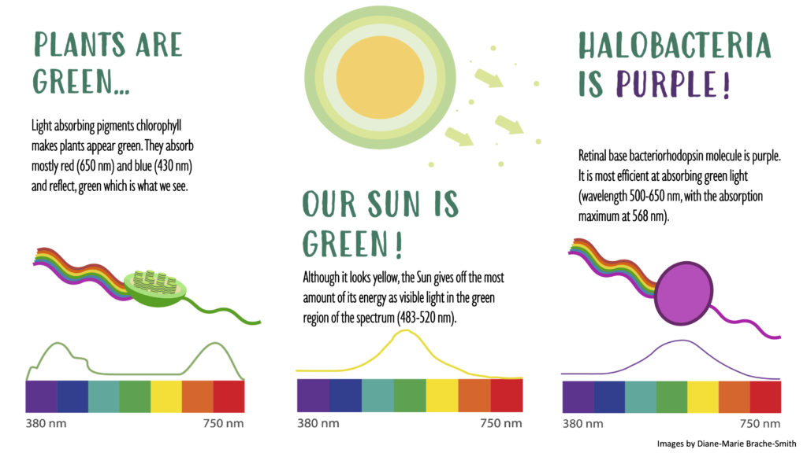
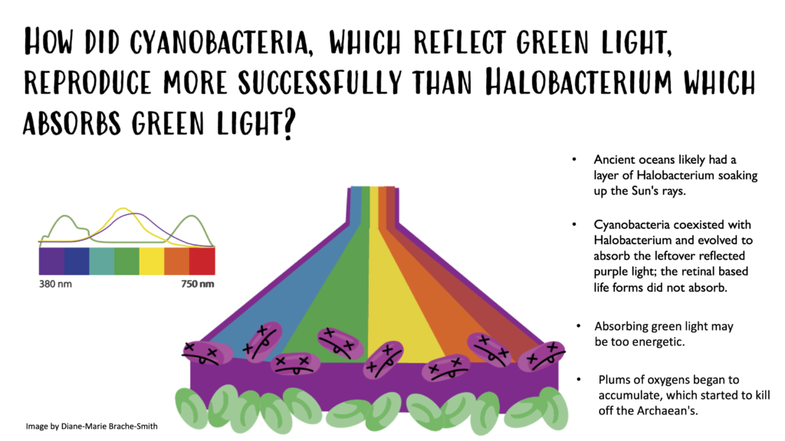
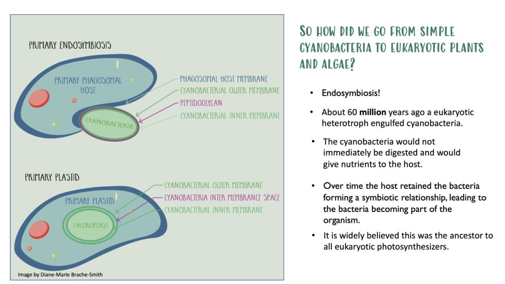
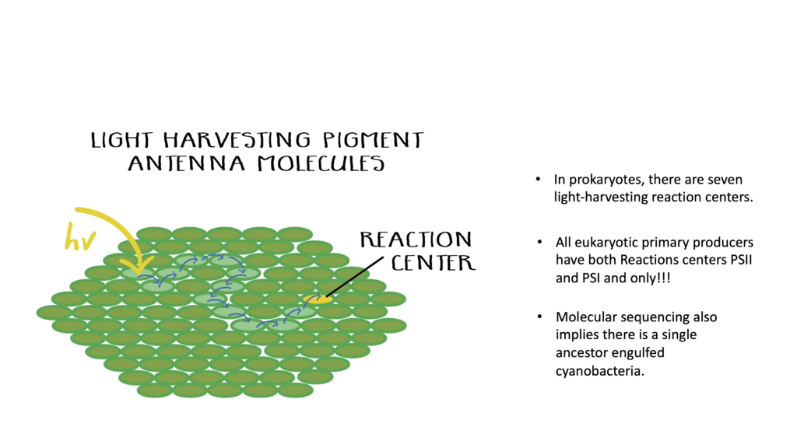
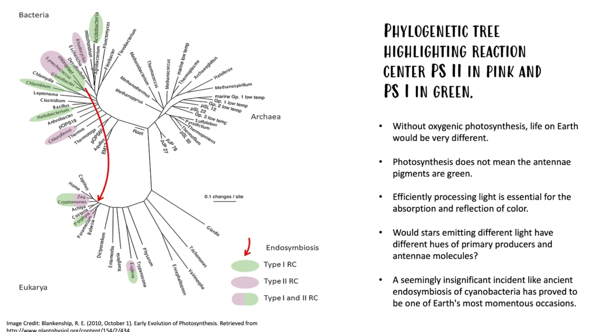
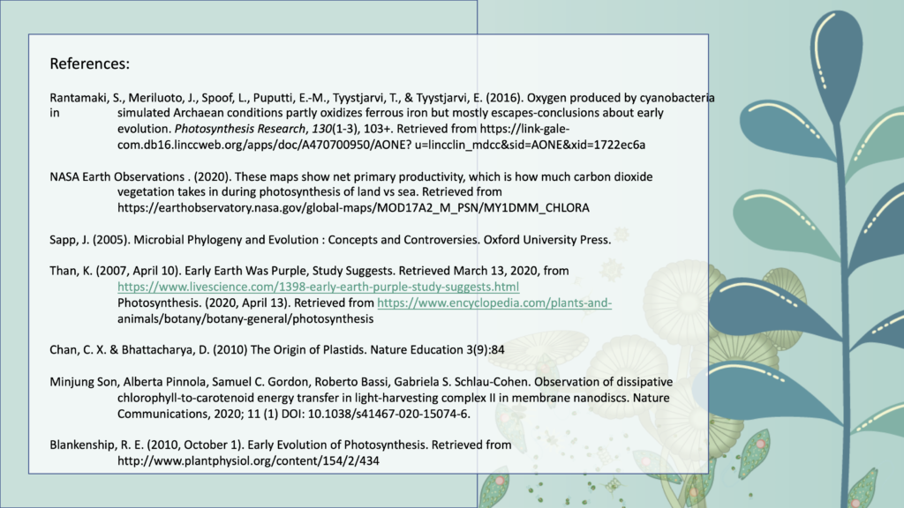
Two molecules at the heart of life on Earth: chlorophyll, which captures sunlight in plants and cyanobacteria, and the heme group in hemoglobin, which carries oxygen in animal blood. Despite their different jobs, their porphyrin cores are remarkably similar. These illustrations line them up side by side.
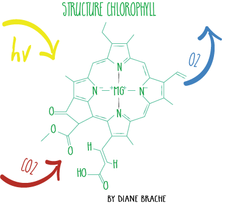
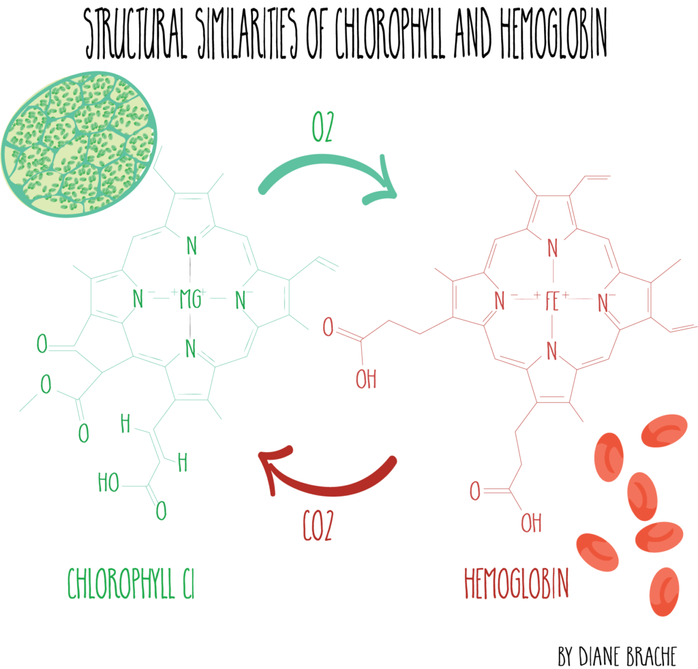
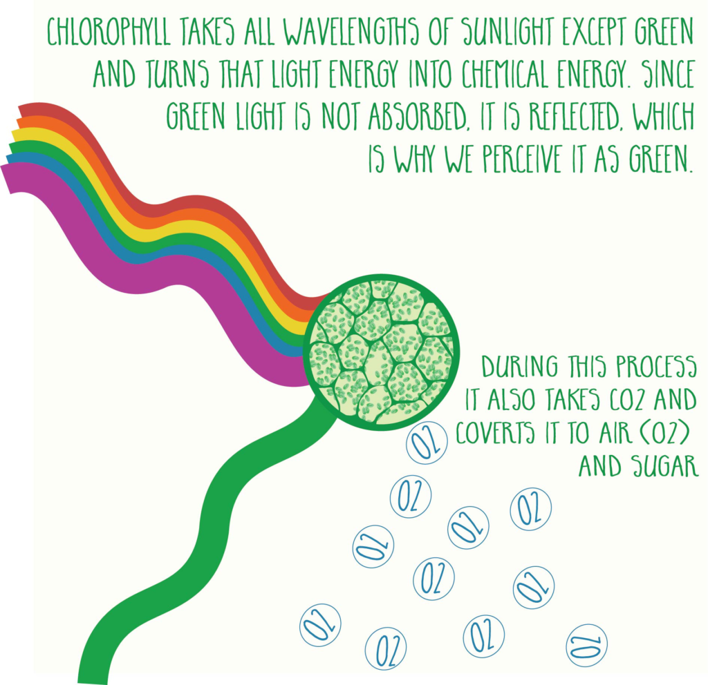
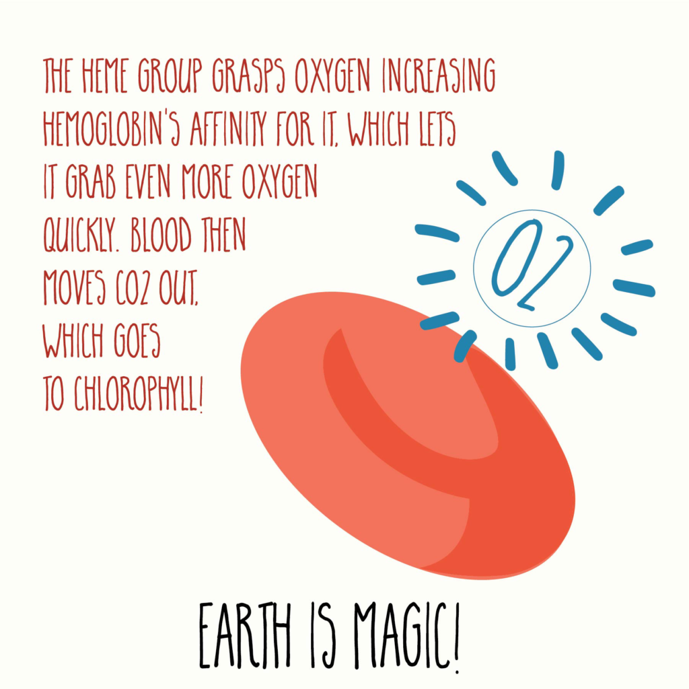
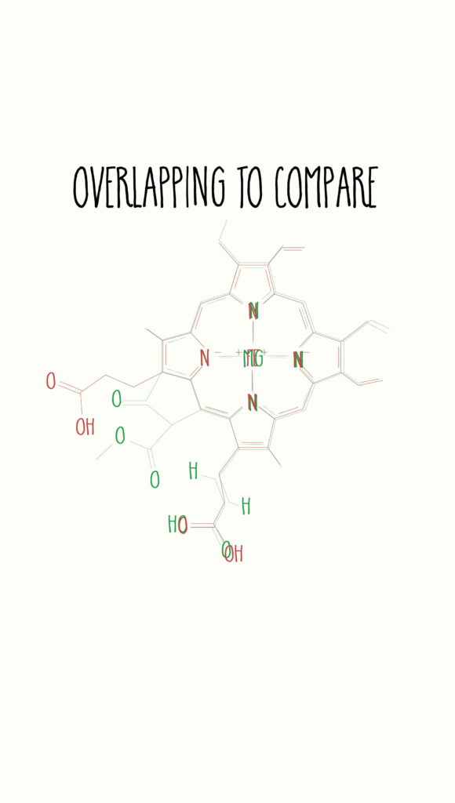